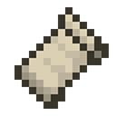

Prospector's Portfolio
Bio
Hi, my name is Prospector and below you will find a list of my education and notable projects that I have worked on. I primarily specialize in frontend development, but I do backend work too. I excel in collaborating with others and helping to create things that no one person could accomplish alone. I also do graphic design which helps me greatly in many of my projects, whether it is in creating assets for my Minecraft mods, creating logos and branding for my projects, or doing frontend web design.
Education
-
California State University, Chico 2020-present
I'm a Computer Science student at California State University, Chico.
Experience
-
Tech Reborn Developer 2016–2020
I started contributing to the Minecraft mod Tech Reborn in 2016 and quickly became a critical part of the development team for the project before leaving the project in 2020. As of September 2022, Tech Reborn has over 22 million downloads.
-
Traverse Creator 2017–present
I created the Minecraft mod Traverse in 2017 and since then, it has been downloaded over 25 million times across both the Forge and Fabric projects.
-

FabricMC Community Administrator 2018–2020
I was an administrator for the Fabric Minecraft mod loader and toolchain's discord server for 3 years from the public release of Fabric until mid-2020. I played a critical role in helping shape the project in its early days before its public launch in December of 2018.
-
Mod Menu Creator 2018–present
I created the Mod Menu mod for Minecraft in 2018 and it has accumulated over 12 million total downloads.
-

ModFest Founder 2019–present
I founded ModFest in 2019 as a way to drive the creation of new Minecraft mods for the newly launched Fabric mod loader. Since then, ModFest has hosted five subsequent modding events and an in-game modded Minecraft convention called Blanketcon 22 with hundreds of participants in total.
-
TerraformersMC Co-Founder 2019–present
I founded the TerraformersMC Minecraft modding team in 2019 to collaborate with coderbot16 to ensure Traverse and Terrestria, two world generation-based mods for the Fabric mod loader worked well together. Since its founding, TerraformersMC has expanded to 11 people with 7 projects in active development.
-
QuiltMC Co-Founder 2021
I helped to found the QuiltMC mod loader and toolchain for Minecraft with a number of other developers who formerly worked on the FabricMC project. I left the project quickly after, but I was instrumental in many decisions made before and during the public launch of the project.